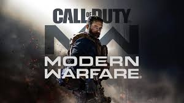
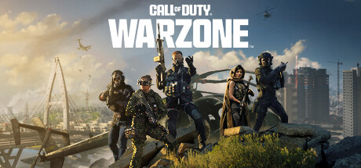

Diseñado por: Jose De La Cruz / J-1018
Call of Duty: Serie de Videojuegos
Call of Duty Favoritos
5. Call of Duty: Modern Warfare 2
Lanzado en 2009, Call of Duty: Modern Warfare 2 es un juego de disparos en primera persona que continúa la historia del primer Modern Warfare. La narrativa gira en torno a la lucha contra el terrorismo global en un contexto de guerra moderna.
Destacado por su intensa campaña y el altamente competitivo modo multijugador, introdujo mapas icónicos y jugabilidad mejorada. Este título se mantiene entre los favoritos de los fanáticos de la serie.

4. Call of Duty: Modern Warfare 3
Modern Warfare 3, lanzado en 2011, es la culminación de la trilogía. Aquí se vive la experiencia de un conflicto global de proporciones épicas, con una narrativa profunda y emocionante.
Su multijugador mejorado y la variedad de mapas populares lograron mantener la base de jugadores activa, consolidando su lugar en la franquicia.

3. Call of Duty: Modern Warfare
En 2019, se lanzó una reinterpretación moderna de la serie. Este título presenta gráficos avanzados y una historia renovada, adaptada a las audiencias actuales.
Modos de juego como Battle Royale y Operación Especial ofrecen diversidad y retos, logrando atraer tanto a veteranos como a nuevos jugadores.

2. Call of Duty: Warzone Caldera
Warzone Caldera, lanzado en 2020, ofrece una experiencia Battle Royale gratuita con un mapa de gran tamaño y diversos modos de juego. La estrategia y habilidad son clave para sobrevivir y ganar.
Este título se ha posicionado como uno de los más populares en el género, con constantes actualizaciones y contenido nuevo.

1. Call of Duty Mobile
Call of Duty Mobile, lanzado en 2019, lleva la acción de la serie a dispositivos móviles. Ofrece modos como Team Deathmatch y Battle Royale, adaptados perfectamente para el entorno móvil.
Con contenido actualizado regularmente, este juego permite disfrutar de Call of Duty en cualquier lugar, convirtiéndose en un éxito mundial.
¿Qué es Call of Duty?
Call of Duty es una de las franquicias de videojuegos más reconocidas en el mundo.
Su enfoque en la acción militar y su narrativa inmersiva lo han convertido en un fenómeno global.
La experiencia multijugador es uno de los pilares más destacados, permitiendo a jugadores de todo el mundo enfrentarse en intensas batallas online.
El modo campaña ofrece historias épicas que combinan momentos emocionantes con escenarios realistas.
Además, los gráficos de última generación hacen que cada misión se sienta como parte de una película de acción.